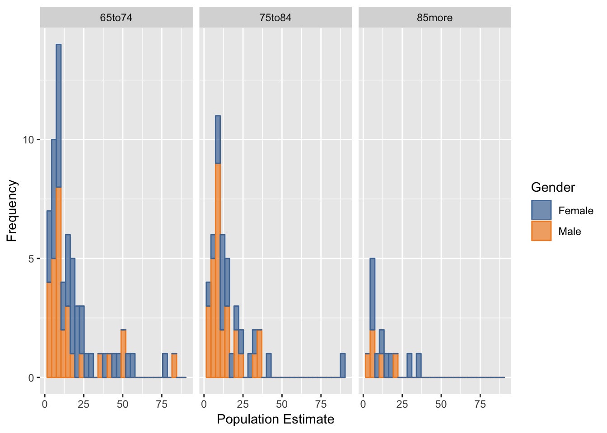
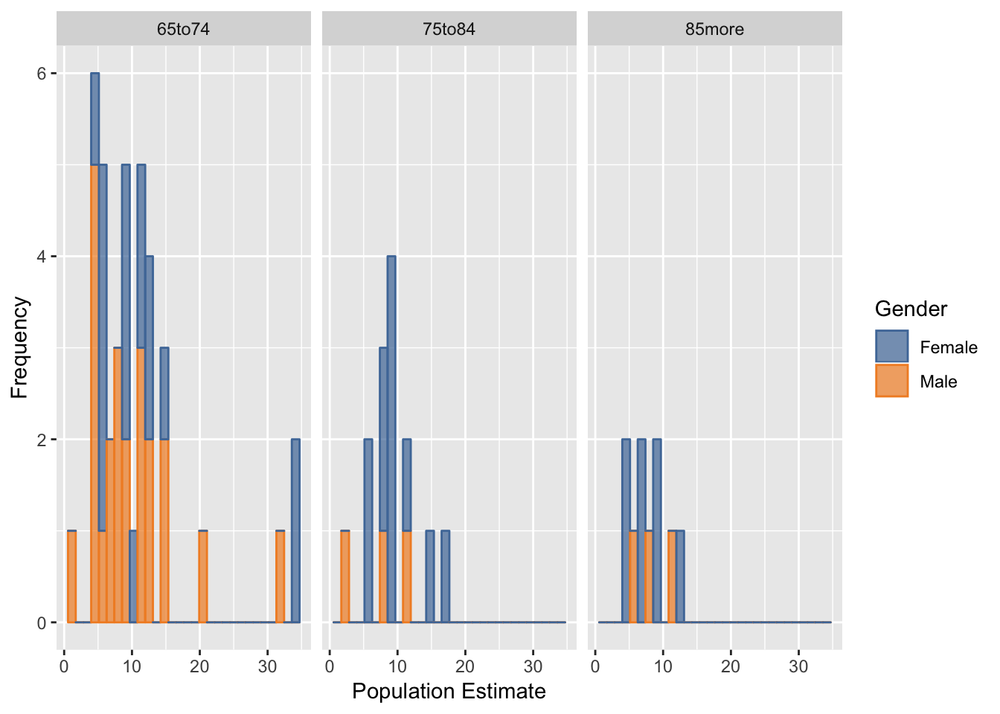
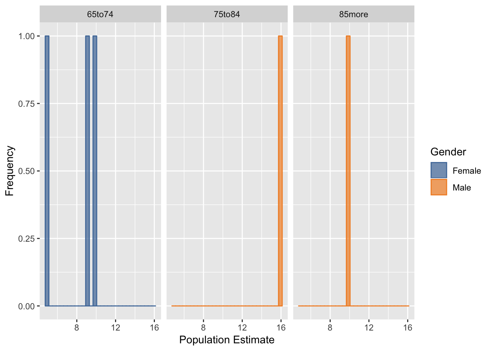
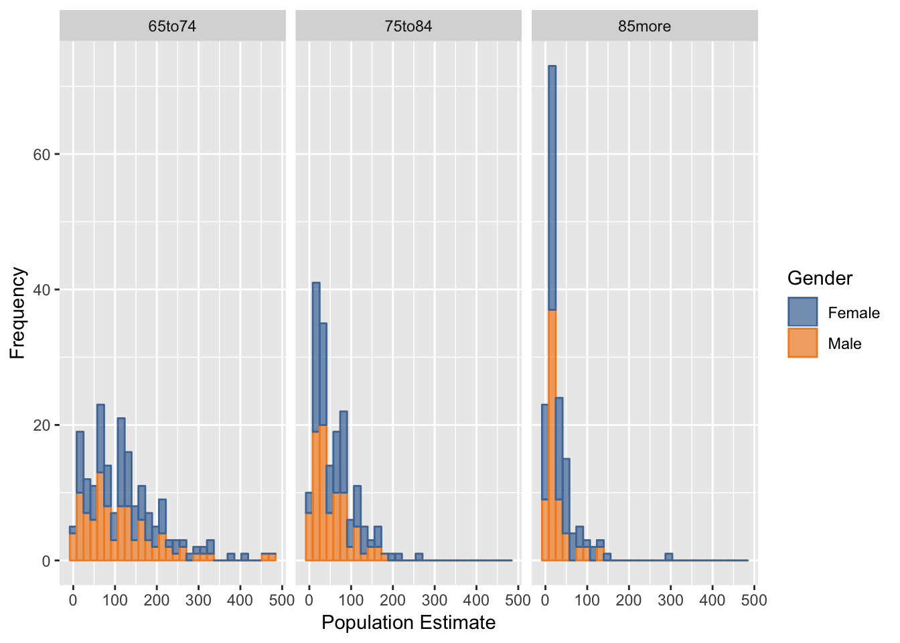
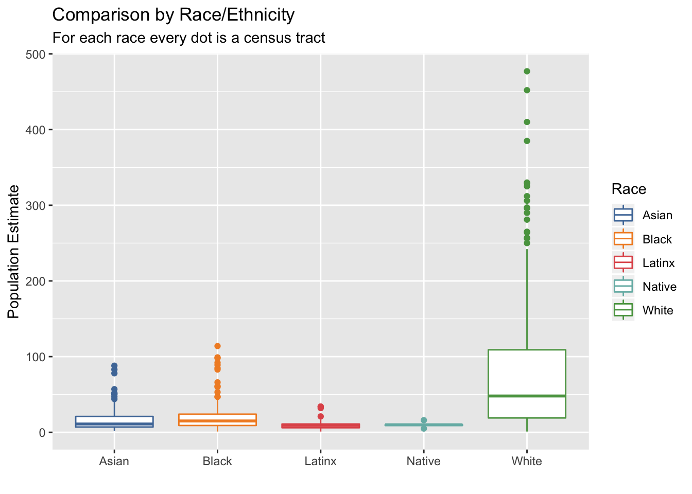
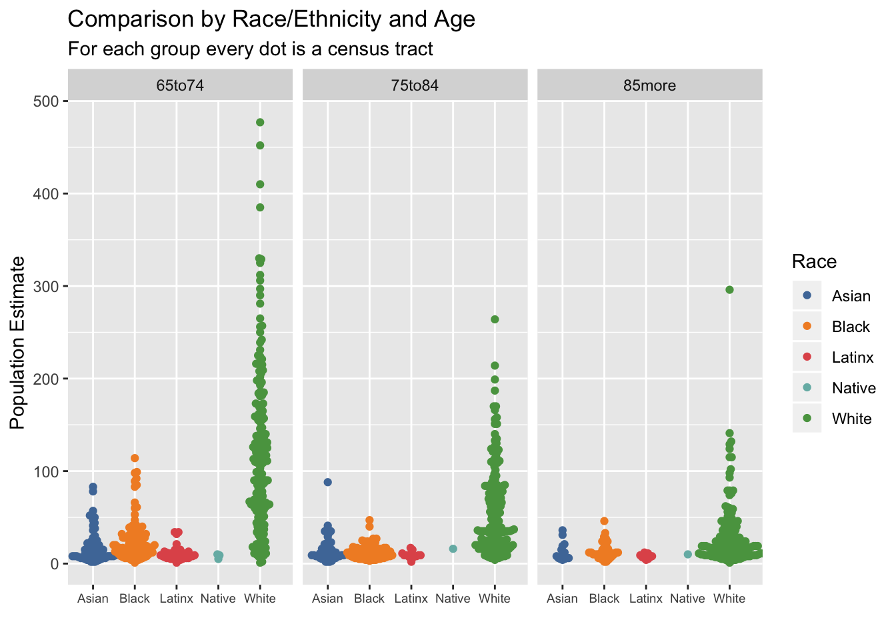
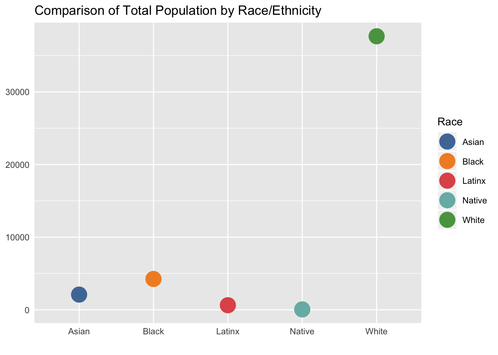

Washtenaw County 65+ Seniors Report
Please click the tabs below to see graphs of Washtenaw County 65+ seniors demographics by race/ethnicity and age groups.
*Note that Census Tracts which have no population for the race/ethnicities are eliminated.
Data in this report are retrieved from the 2013-2017 American Community Survey 5-Year Estimates.
1. Individual Race/Ethnicity Graphs
1.1 Asian
Each frequency indicates the amount of Census Tracts in Washtenaw County that have the according Asian population estimate in certain age group.

1.2 Black
Each frequency indicates the amount of Census Tracts in Washtenaw County that have the according Black population estimate in certain age group.

1.3 Latinx
Each frequency indicates the amount of Census Tracts in Washtenaw County that have the according Latinx population estimate in certain age group.

1.4 Pacific Islander
There is no 65+ seniors in Washtenaw County identified themselves as Pacific Islander in the 2013-2017 American Community Survey 5-Year Estimates.
1.4 Native
Each frequency indicates the amount of Census Tracts in Washtenaw County that have the according Native population estimate in certain age group.

1.5 White
Each frequency indicates the amount of Census Tracts in Washtenaw County that have the according White population estimate in certain age group.

1.6 Other
Each frequency indicates the amount of Census Tracts in Washtenaw County that have the according other race/ethnicity population estimate in certain age group.

2. Comparison Graphs
2.1 By Race/Ethnicity

2.2 By Race/Ethnicity and Age

2.3 Total Population
